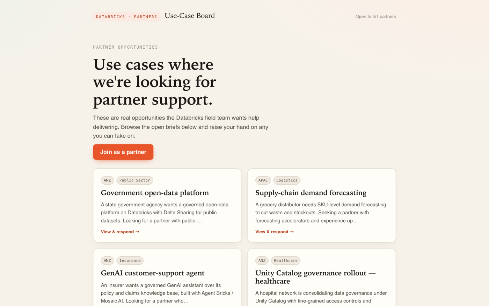
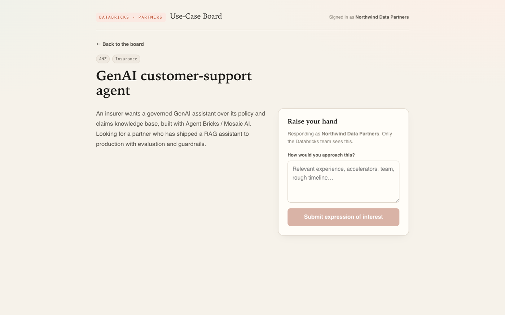
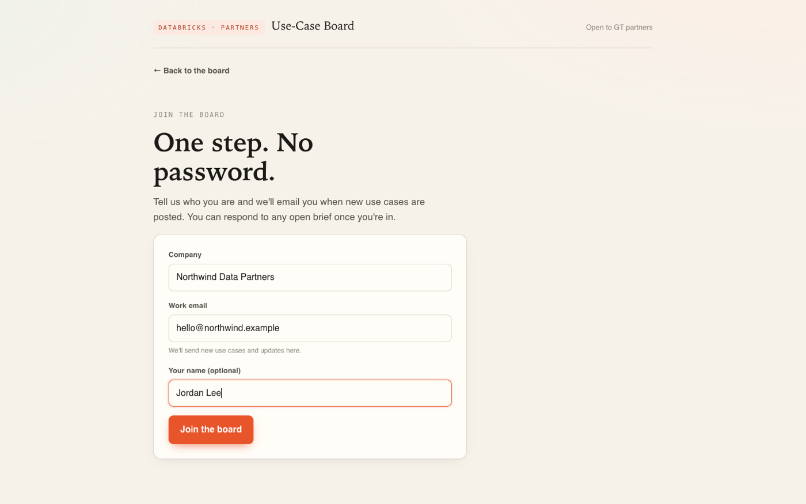
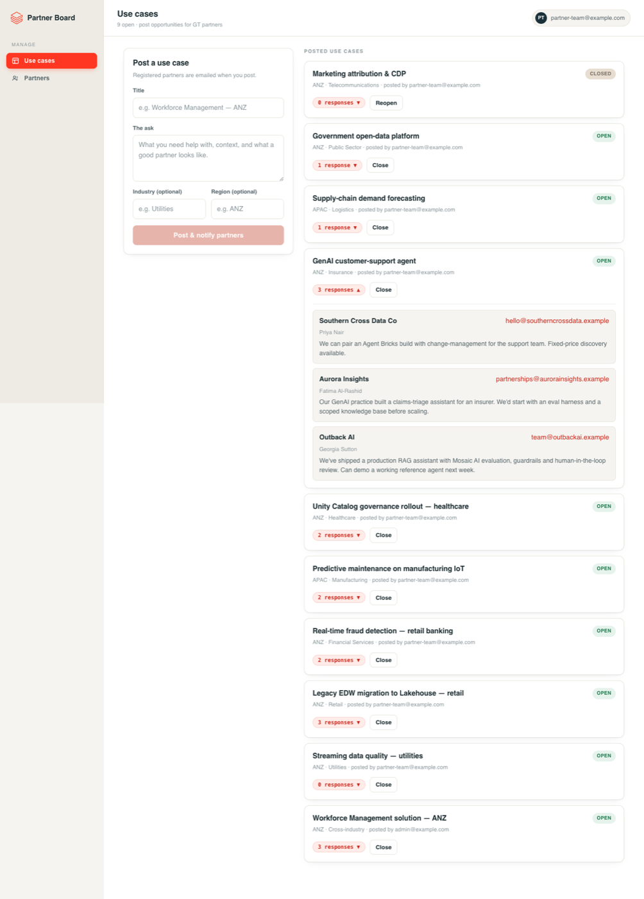
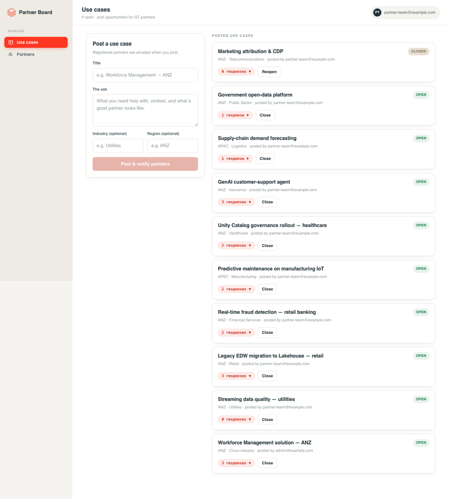
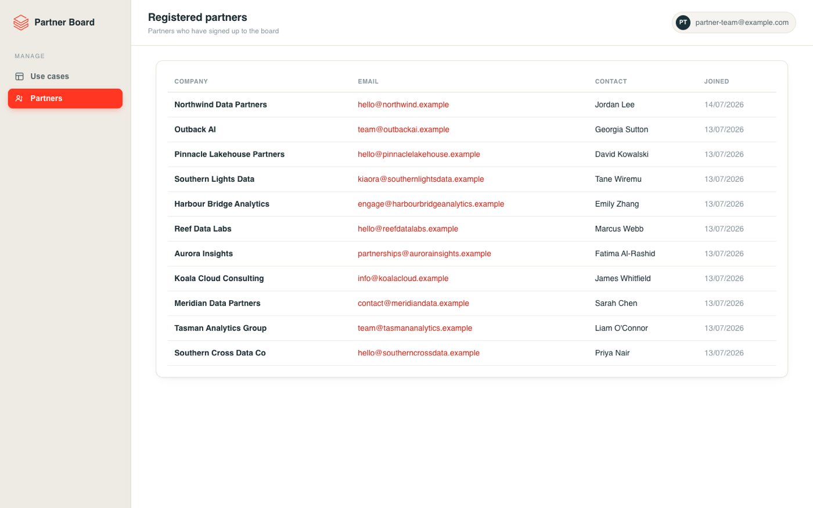

A self-serve board where Databricks account teams post use cases needing partner help, and GT partners raise their hand.
Manually hunting for a partner with a specific capability is slow and often gets no response. The Partner Use-Case Board makes it self-serve: post a use case, notify the whole partner ecosystem at once, and review structured responses with each partner's approach, contact, and company details.
When your customer needs a specific vertical solution, you should not have to rely on who you happen to know. The board surfaces every willing partner at once, so the best fit comes to you.
Partners reach the board on a public URL with no Databricks account, no SSO, no setup. They register once and get emailed whenever a new use case is posted.
Every response includes the partner's company, contact, and a written description of their proposed approach. You get substance to evaluate, not just a list of names.
The admin side lives inside your workspace, behind SSO. All data lives in Lakebase. The design fits your existing security model with no extra configuration.
Partners get a clean public portal. The Databricks team gets an admin cockpit inside the workspace. Screens below use sample data.






From a posted opportunity to a partner introduction, in five steps.
An account team member signs into the admin cockpit (a Databricks App behind workspace SSO) and describes what they need: a title, the ask, and optionally an industry and region.
The moment a use case is published, an email goes out to every registered GT partner with the full details. No separate broadcast needed.
Partners open the public portal (no login required), browse open use cases, and for any they can help with, submit their company, a contact, and a short description of their approach.
Each use case in the cockpit shows all responses. The account team reads each partner's approach, sees their contact, and decides who to follow up with.
Once a match is made, the team reaches out directly to the partner contact and marks the use case closed so partners stop responding to it.
The Partner Use-Case Board is where Databricks posts real customer opportunities that need partner delivery expertise. If your firm has relevant experience, accelerators, or a team ready to deliver, this is how you find and respond to those opportunities.
Once you submit, the Databricks account team is notified and reviews all responses. Your submission is visible only to the Databricks team — other partners cannot see what you wrote. If your response is a strong fit, a member of the team reaches out to you directly to discuss next steps.
The admin cockpit is a Databricks App that runs inside your workspace. Only Databricks staff with workspace access can reach it.
The split is not a preference — it is a platform constraint, and the reason the design is interesting.
Databricks Apps run inside a workspace and authenticate via workspace SSO. There is no supported way to make one publicly accessible without a Databricks account. GT partners do not have Databricks accounts, so they cannot reach an App directly. The solution is two surfaces that share one data store:
Both surfaces read and write the same Lakebase instance — a Databricks-managed Postgres database with three tables: partners, use_cases, responses. Email notifications fire when a partner registers, when a use case is published, and when a response is submitted.
ADMIN COCKPIT PARTNER PORTAL
Databricks App GCP Cloud Run
Workspace SSO Public, no login
Databricks staff GT partners
| |
workspace auth M2M OAuth (SP)
| |
+-----------+------------+
|
[ LAKEBASE ]
Databricks-managed Postgres
+------------------------+
| partners |
| use_cases |
| responses |
+------------------------+
React + FastAPI (Python) · Lakebase
Databricks Apps · GCP Cloud Run
No. The Partner Use-Case Board is a public web app. You do not need a Databricks account or any existing relationship with Databricks to register and browse.
No. You register with your work email and company name. A secure session cookie keeps you signed in for 30 days.
No. Your expression of interest is private. Only the Databricks team can read it — competing firms will not see your approach, experience, or team details.
Yes. You can submit one EOI per use case, across as many open use cases as are relevant to your firm.
The Databricks team reviews submissions and will contact you directly by email if your response is a good fit. Not every submission will receive a reply.
Real customer opportunities across industries where a Databricks account team needs a partner with specific delivery capability — a sector solution, a technology integration, or a regional presence. They vary in size, industry, and region.
The admin cockpit is a Databricks App; the partner portal runs on Cloud Run. Both share one Lakebase. The repo has the full source, tests, and a deploy guide.